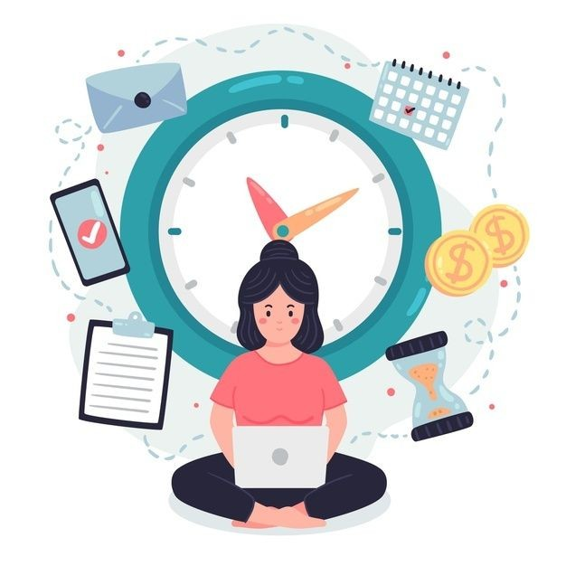

⏳ Time Management
Master your time like a true shinobi!

Time Management
🕒 Why Time Management Matters
Effective time management helps you achieve goals faster, reduce stress, and maintain a balanced lifestyle. It allows you to get more done in less time — and still have time to rest.
📅 Tools to Use
- To-do Lists: Stay on top of your daily tasks.
- Calendars: Plan events, deadlines, and goals.
- Pomodoro Timer: Boost focus with 25-minute sessions and short breaks.
- Timetable Maker: Schedule study and chill blocks clearly.
⏰ Tips for Managing Time
- Prioritize tasks by importance and deadlines.
- Break big tasks into small chunks.
- Avoid multitasking — focus on one thing at a time.
- Use alarms/reminders to stay on track.
- Review and plan every night for the next day.
📈 Building a Daily Routine
Try building a routine that includes time blocks for studying, breaks, meals, physical activity, and sleep. This helps your brain and body sync into a productive rhythm.
🚫 Common Time Wasters
- Endless scrolling on social media
- Indecisiveness about where to start
- Too many apps open at once
- Lack of a clear plan
🔔 Quick Note:
You don’t need more time, you just need better focus!